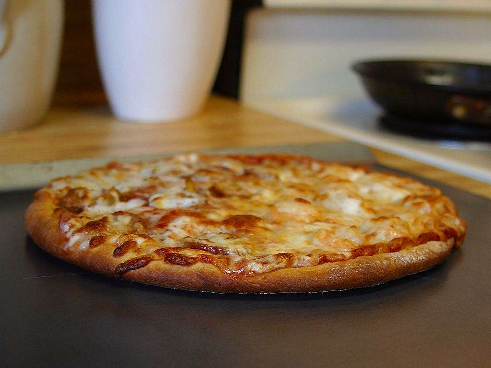

Pizza

Homemade pizza with your favorite toppings.
Ingredients
- Pizza dough
- Tomato sauce
- Mozzarella cheese
- Olive oil
- Your choice of toppings (pepperoni, mushrooms, bell peppers, onions, etc.)
- Salt and pepper
Instructions
- Preheat the oven to 475°F (245°C).
- Roll out the pizza dough on a floured surface to your desired thickness.
- Transfer the rolled dough to a pizza stone or baking sheet.
- Spread a layer of tomato sauce over the dough, leaving a small border around the edges.
- Sprinkle mozzarella cheese evenly over the sauce.
- Add your choice of toppings and season with salt and pepper.
- Drizzle a little olive oil over the top for extra flavor.
- Bake in the preheated oven for about 12-15 minutes, or until the crust is golden brown and the cheese is bubbly.
- Remove from the oven, let it cool for a few minutes, then slice and serve.
Home